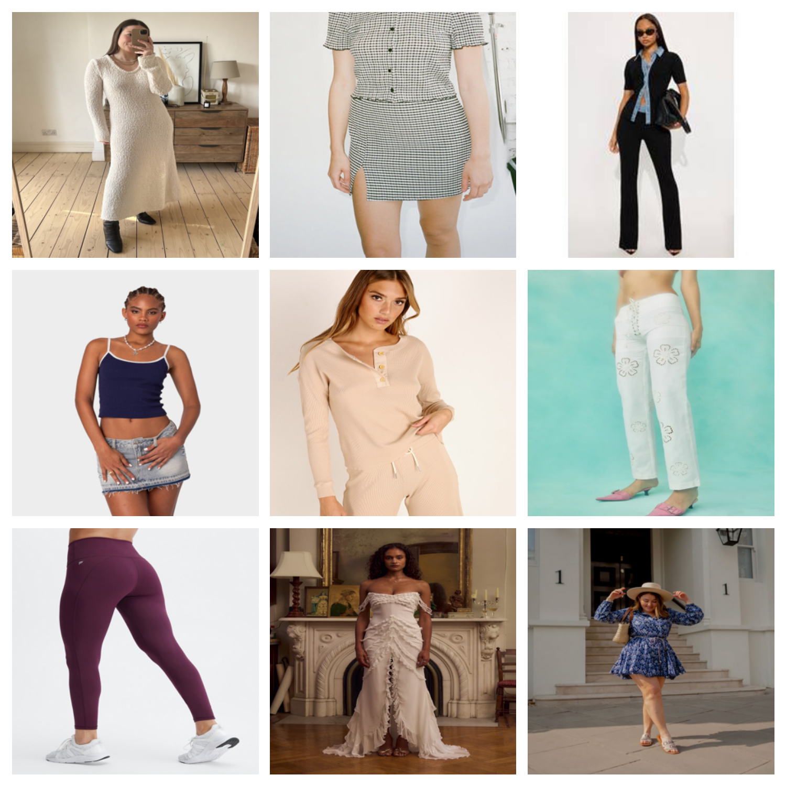
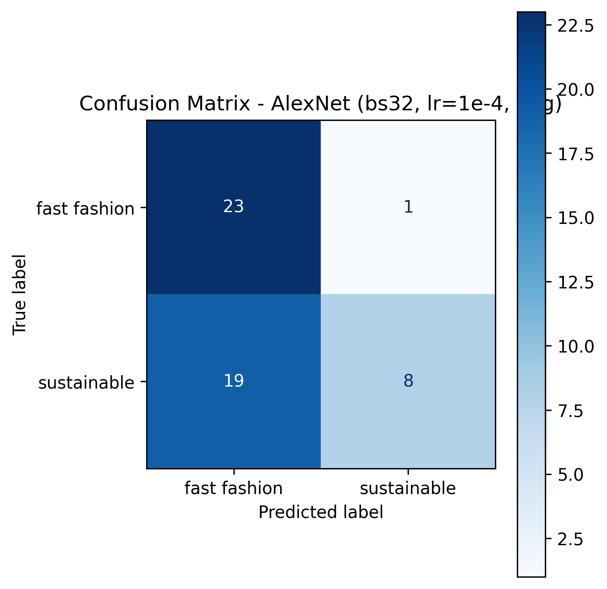

✨ Problem & Motivation
Why does classifying clothing brands matter?
The Fast Fashion Problem
- Fast fashion is a major contributor to pollution and textile waste.
- Production often relies on low-cost, low-transparency supply chains.
- Consumers rarely know whether a brand is sustainable or harmful.
Project Goal
- Build an image classifier that labels clothing as Fast Fashion or Sustainable.
- Use AlexNet as the core CNN architecture, with transfer learning.
- Explore how hyperparameters and augmentation affect performance.
📂 Dataset Overview
Custom, hand-curated image dataset of clothing items.
Fast Fashion
Sustainable
train/
valid/
train/
valid/
Structure & Sources
- Images collected from online search for known fast-fashion and sustainable brands.
- Two top-level classes: fast-fashion, sustainable.
- Organized into
train/andvalid/folders per class. - All images resized to 224 × 224 pixels for AlexNet.
Sample Images
(Replace this image with a grid from your dataset.)
🧠 Model & Technical Approach
How AlexNet is adapted for sustainable fashion classification.
Why AlexNet?
- Classic CNN architecture that won ImageNet in 2012.
- Well-suited for transfer learning on smaller custom datasets.
- Computationally efficient enough to train on Google Colab GPU.
Architecture (Adapted)
- Input:
3 × 224 × 224RGB images. - 5 convolutional layers + ReLU activations.
- Max pooling layers to downsample feature maps.
- Dropout in fully connected layers to reduce overfitting.
- Final fully connected layer modified to output 2 classes.
Preprocessing & Training Pipeline
- 1 Load images from Google Drive dataset folders.
- 2 Resize to 224 × 224 and normalize with ImageNet mean/std.
- 3 Apply optional data augmentation (flips, rotations, color jitter).
- 4 Feed batches into AlexNet; compute cross-entropy loss.
- 5 Optimize with Adam/SGD; tune learning rate and batch size.
- 6 Track metrics and confusion matrices using Weights & Biases (wandb).
🔬 Experiments
Exploring how training choices affect model performance.
| Experiment | Settings | Goal |
|---|---|---|
| Batch Size | Compare 16 vs 64 |
Understand impact on stability and convergence speed. |
| Learning Rate | Compare 1e-3 vs 1e-4 |
Balance learning speed vs overshooting minima. |
| Data Augmentation | With vs without flips/rotations/color jitter | Measure effect on generalization and overfitting. |
| Architecture Comparison | AlexNet vs ResNet18 (transfer learning) | See whether deeper residual networks outperform AlexNet. |
Implementation Details
- Framework: PyTorch in Google Colab.
- Loss:
CrossEntropyLoss. - Optimizers: Adam and/or SGD with momentum.
- Tracking: all runs logged with wandb (accuracy, loss, confusion matrices).
📊 Results & Visualizations
Training curves, validation performance, and confusion matrices.
Training vs Validation Accuracy
Replace with a plot exported from wandb or Matplotlib.

Confusion Matrix
Shows how often each class is predicted correctly.
Key Findings (Example – update with your actual numbers)
- Best AlexNet configuration achieved around XX% validation accuracy.
- Data augmentation reduced overfitting and improved generalization.
- Lower learning rate (
1e-4) produced smoother, more stable training curves. - ResNet18 slightly outperformed AlexNet on this dataset, suggesting benefits from deeper residual connections.
🌱 Discussion & Takeaways
What this project shows about deep learning and sustainable fashion.
What Worked Well
- Transfer learning allowed high performance on a relatively small custom dataset.
- Simple augmentations significantly improved robustness to new images.
- wandb made it easy to compare runs and choose good hyperparameters.
Limitations & Future Work
- Dataset size and brand diversity could be expanded.
- Real-world deployment would require continuous updates and more brands.
- Next steps: deploy as a web or mobile app for real-time image classification.
Project Links
- Colab Notebook: https://colab.research.google.com/drive/1OrZ5TUaiAEx46GhYhukVct5yPyx9MliR?usp=sharing
- Scientific Poster: https://docs.google.com/presentation/d/1mWxEkUj8KEomBjCkIrGdQ5suTPA5T-Y-GDbjMK-_vtw/edit?usp=sharing
- Presentation Video: Add your YouTube / Drive link
- GitHub Repository: https://github.com/Raydkhowtocode/sustainable-style-ai